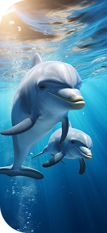
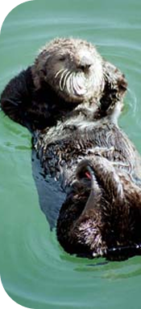
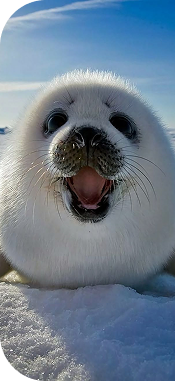

Caza comercial de ballenas
La caza excesiva histórica llevó a muchas especies al borde de la extinción.


Los gobernantes de sangre caliente de las profundidades
Los mamíferos marinos son un grupo diverso de animales de sangre caliente que se adaptaron a la vida en el océano. Respiran aire, amamantan a sus crías y mantienen su temperatura corporal en aguas frías. Desde inmensas ballenas hasta juguetonas nutrias marinas, estas criaturas son esenciales para el equilibrio de los ecosistemas marinos.
Los mamíferos marinos pertenecen a varios órdenes: cetáceos (ballenas, delfines, marsopas), pinnípedos (focas, leones marinos, morsas), sirenios (manatíes, dugongos) y carnívoros marinos como las nutrias.
Las estrategias de alimentación varían ampliamente: desde las ballenas barbadas que filtran toneladas de krill al día, hasta los delfines que cazan peces en grupo coordinado usando ecolocalización.
Muchos mamíferos marinos exhiben estructuras sociales complejas, migraciones de larga distancia y comunicación sofisticada a través de vocalizaciones que pueden viajar miles de kilómetros.

Balaenoptera musculus
El animal más grande que jamás haya existido en la Tierra, alcanzando hasta 30 metros de longitud.
📏 Hasta 30m 📍 Océanos abiertos de todo el mundo
Tursiops truncatus
Mamíferos inteligentes y sociales, conocidos por su ser juguetones y habilidades de comunicación.
📏 2-4m 📍 Océanos templados y tropicales
Enhydra lutris
El mamífero marino más pequeño, conocido por usar rocas como herramientas para abrir mariscos.
📏 1-1,5m 📍 Aguas costeras del Pacífico Norte
Pagophilus groenlandicus
Focas del Ártico famosas por sus esponjosas crías blancas y sus distintivas marcas en forma de arpa.
📏 1,5-2m 📍 Atlántico Norte y Océano ÁrticoLos mamíferos marinos se encuentran en todos los océanos de la Tierra, desde el hielo ártico hasta los arrecifes de coral tropicales. Muchas especies realizan migraciones anuales de miles de kilómetros.
Delfines y grandes ballenas recorren largas distancias siguiendo fuentes de alimento.
Regiones árticas y antárticas hogar de focas, morsas y ballenas adaptadas al frío.
Ecosistemas cercanos a la costa donde las nutrias marinas desempeñan un rol clave en la salud del ecosistema.
La caza excesiva histórica llevó a muchas especies al borde de la extinción.
La captura incidental en redes comerciales mata a cientos de miles de mamíferos marinos cada año.
El sonar, el tráfico marítimo y la actividad industrial perturban la comunicación y navegación.